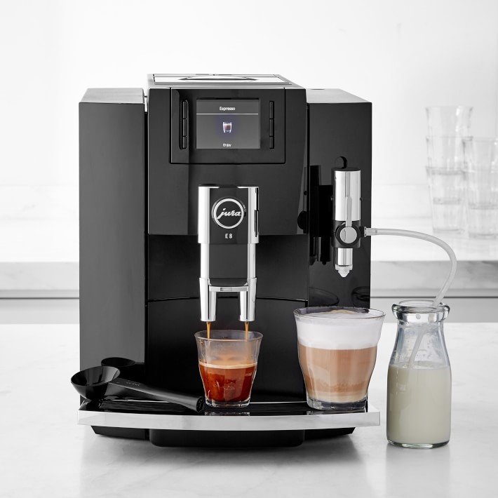
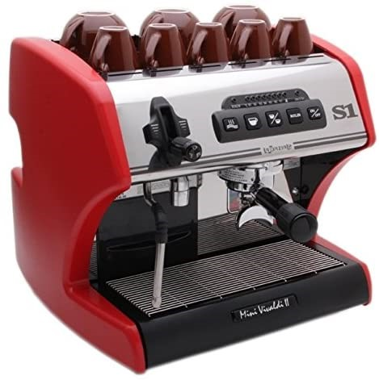
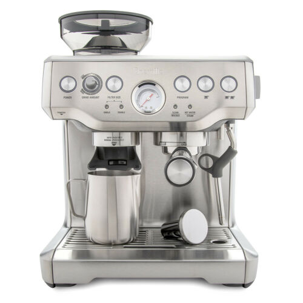

Super-automatic espresso machines are fully automatic coffee and espresso makers with built-in coffee grinders that make coffee drinks with the push of a button. Coffee is ground fresh, tamped perfectly, brewed, and dispensed in seconds. With many super-automatic espresso machines, you can set your preferred coffee strength, drink volume, temperature, and more. The milk frother on these espresso machines are automatic as well, letting you easily make cappuccinos, lattes, and macchiatos whenever you like.

Semi-automatic espresso machines are one of the best ways to brew coffee and espresso at home. If you're looking for the best semi-automatic espresso machine for you, you're in the right place. Browse the largest collection of semi-automatic espresso machines on the internet and read reviews from our customers. Soon, you can froth milk and make coffee and espresso with coffee shop quality in your own home.

Prosumer espresso machines are professional equipment for the home, made up of the same components and materials you would find in commercial espresso machines in coffee shops. At Whole Latte Love, you'll find an incredible selection of dual boiler espresso machines and heat exchanger espresso machines that take advantage of PID controllers, iconic E61 brew groups, no-burn steam wands, and the best in temperature stability. If you want to make the best coffee and espresso and leave the coffee shop behind, there's no better option than a prosumer espresso machine.